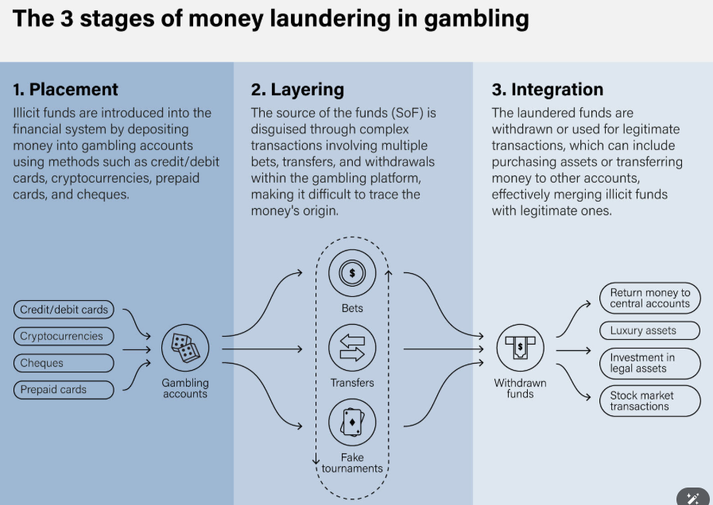
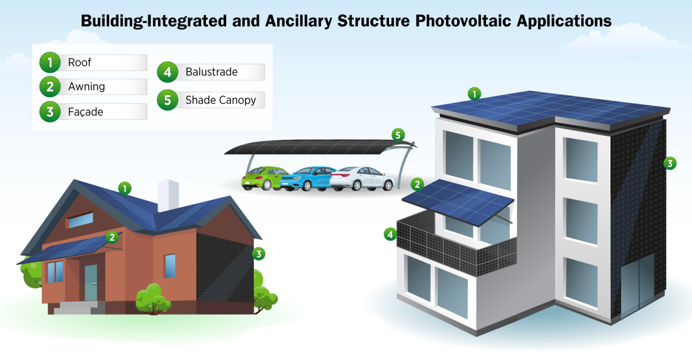
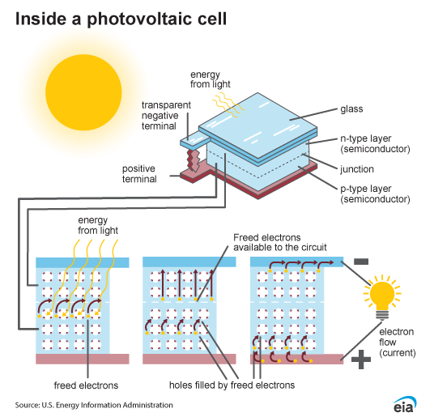
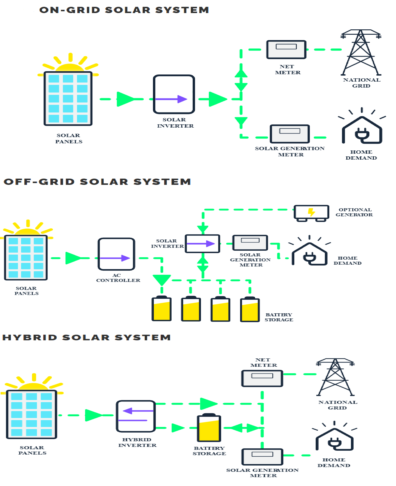
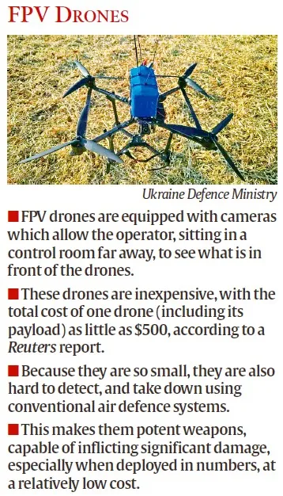
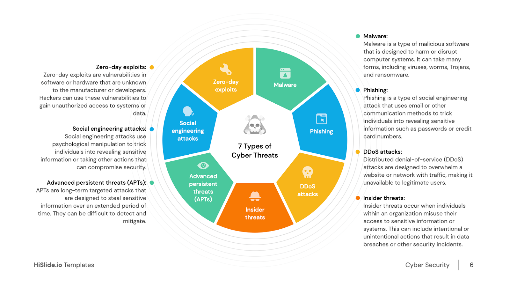
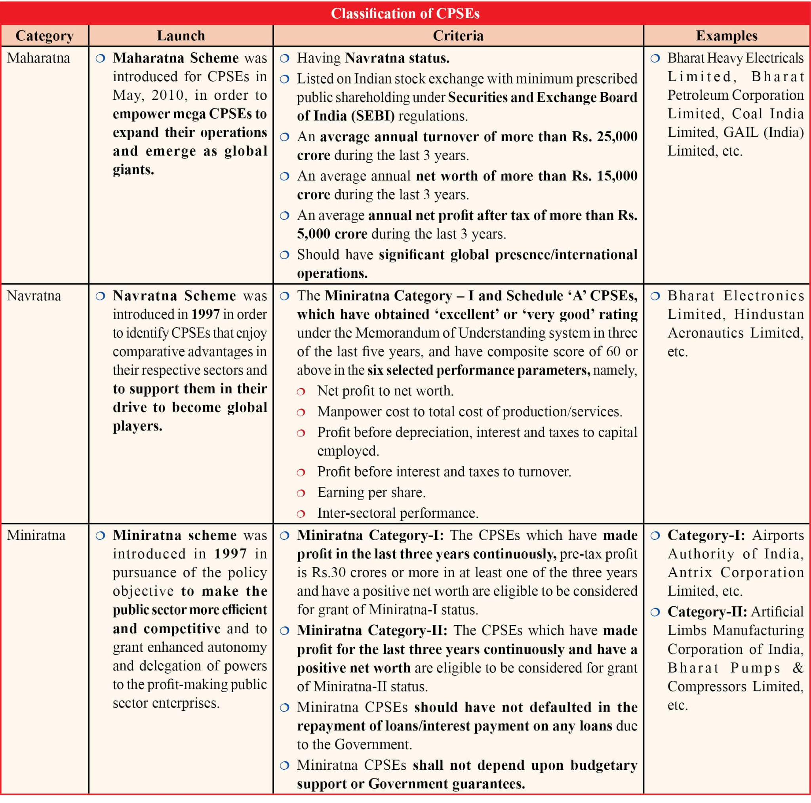

Governance
Money Laundering in Online Gaming
Source:BL
Why in News?
In a move to ensure financial integrity and protect users, India is planning to bring online real money gaming (RMG) under the ambit of the Prevention of Money Laundering Act, 2002 (PMLA).
What is the Landscape of Online Real Money Gaming in India?
- Definition: RMG platforms allow users to stake real money for potential winnings in games like fantasy sports, poker, and skill-based contests.
- Market Momentum: India became the world’s largest gaming market in 2023 with 568 million gamers and 9.5 billion app downloads. The market was valued at USD 2.2 billion in 2023, projected to reach USD 8.6 billion by 2028.
- Key Growth Drivers: Cheap internet data and increasing smartphone penetration have made online gaming more accessible, especially to India's large and young population.
- The rise of digital payments has made transactions seamless, while domestic gaming studios have flourished with technological advancements.
- Due to high unemployment and limited earning opportunities, many seek quick money, making betting apps highly attractive.
- Additionally, popular sporting tournaments like the Indian Premier League, combined with celebrity promotions, lure gullible youth into these platforms. Poor digital literacy (only 38% of households in India are digitally literate) further increases their vulnerability.
- Regulation: In India, State legislatures have the exclusive authority to make laws on gaming, betting, and gambling under Entry 34 of the List II (State List) of the Seventh Schedule of the Indian Constitution.
- At the national level, the Public Gambling Act, 1867 exempts skill-based games from penalties, while the Prize Competitions Act, 1955 regulates prize-based competitions.
- The Information Technology (Intermediary Guidelines and Digital Media Ethics Code) Amendment Rules, 2023 introduced definitions for key terms such as online game, online gaming intermediary, online real-money games (RMG), permissible games, and self-regulatory bodies, aiming to bring more structure to the rapidly evolving digital gaming landscape.
- In India, foreign investment and technology collaboration are completely banned in the lottery, gambling, and betting sectors.
- Taxation: A 28% Goods and Services Tax (GST) is levied on legal RMG firms, Under the Income Tax Act, 1961, winnings above Rs 10,000 from lotteries, card games, or any game (including skill-based games) are taxed at 30% (excluding surcharge and cess).
- Money Laundering Mechanism in RMG: The money laundering process in online gaming typically unfolds in three stages.
- The first stage, Placement, involves injecting illicit funds into the gaming ecosystem through deposits or virtual credit purchases.
- This is followed by Layering, where the origins of the funds are obscured using in-game transfers, currency conversions, and a series of complex transactions.
- Finally, in the Integration stage, the “cleaned” money is withdrawn as legitimate earnings, such as winnings or refunds, often through cryptocurrency channels or cross-border payment systems.

Why is Regulation of Online Gaming Under PMLA Necessary?
- Current Regulatory Gaps: India’s Public Gambling Act (1867) bans public gambling but exempts games of skill.
- States regulate betting and gambling differently, resulting in a fragmented legal environment that illicit operators exploit.
- Illegal offshore operators exploit India’s regulatory gaps, evading taxes and perpetrating large-scale fraud by siphoning user funds abroad. Cases like Mahadev app (Rs 6,000 crore suspected proceeds) and Fiewin (Rs 400 crore fraud) exemplify the scale of illicit operations.
- Unscrupulous operators use shell companies, crypto wallets, and digital channels to launder illicit money.
- This complex scenario highlights the need to bring online gaming under the stringent regulatory ambit of the PMLA to curb financial crimes and enhance oversight.
- Strengthening Accountability: The 2023 PMLA rules extended regulatory oversight to virtual asset service providers, enabling the Financial Intelligence Unit-India (FIU) to better monitor and penalize violations.
- By integrating virtual assets in online RMG under this framework helps to maintain transaction records and report suspicious activities, further enhancing accountability in the gaming ecosystem.
- Terror Financing: Online RMG poses a serious threat of terror financing due to its anonymous and borderless nature. Terror operatives may exploit gameplay as a covert channel to communicate and facilitate illicit transactions within the RMG ecosystem.
- By integrating RMG under PMLA, it can be effectively secured and monitored by national security authorities.
- Cyber Security: India’s cybersecurity infrastructure remains inadequate to fully safeguard emerging digital platforms, including online gaming.
- Online gaming platforms can be exploited to deploy trojans or malware, potentially compromising users’ bank accounts and causing financial losses.
- Integrating under the PMLA will enhance regulatory oversight and reduce risks of cyber fraud and bank-related losses.
What are the Challenges in Enforcing Anti-Money Laundering Regulations on Online Gaming Platforms?
- Use of Mule Accounts and Proxy Payment Channels: Illicit gaming platforms frequently use “mule” bank accounts or third-party wallets to route payments.
- These accounts are often registered in the name of unrelated individuals or shell entities, obscuring the transaction’s origin and purpose.
- Online gaming platforms process thousands of micro-transactions every minute, making it difficult to detect suspicious patterns in real time. Automated systems must be exceptionally robust to flag illicit activity without disrupting legitimate gameplay.
- Misuse of In-Game Purchases and Digital Wallets: Players can convert real money into in-game assets or digital currencies, which can be exchanged, gifted, or withdrawn as real money often without traceability.
- Multiple funding methods (Unified Payments Interface, cards, wallets, crypto, etc.) create unstructured inflow and outflow patterns that are hard to monitor comprehensively. Integration with banking systems for AML checks remains inadequate or inconsistent.
- Cross-Border and Jurisdictional Issues: Gaming platforms may be registered in foreign countries, making coordination between regulatory authorities across borders difficult.
- Different jurisdictions have varying AML laws, complicating enforcement and compliance monitoring.
- Offshore sites like 1xBet frequently change domains and bank partners, making enforcement and prosecution highly complex.
- Difficulty in Proving Intent: Distinguishing between high-stakes gaming and deliberate money laundering can be difficult.
- Players might claim high volumes or rapid transactions are part of legitimate gameplay.
- Evolving Fraud Techniques: Money launderers are constantly adapting, exploiting loopholes like refund abuse, referral bonuses, or dummy gameplay to clean money.
- Keeping up with new typologies of laundering requires constant regulatory and technological upgrades.
- Ineffective Penalties and Enforcement: The absence of a central gaming regulator in India creates a fragmented enforcement environment. With multiple agencies (ED, MHA, RBI, MeitY) sharing partial responsibilities, regulatory overlaps and gaps hinder timely and coordinated AML enforcement.
- Even after failing AML checks, major gambling firms often treat fines as routine costs, not deterrents, leading to repeated violations.
How can India Balance Regulatory Rigor with User Convenience in Online Gaming?
- Tiered KYC Approach: Implement graduated KYC based on user activity and transaction volume—light verification (e.g., OTP on mobile number) at onboarding, with full KYC triggered after a threshold.
- This approach aligns with established regulatory precedents in India. For instance, the Reserve Bank of India (RBI) allows OTP-based onboarding for prepaid payment instruments with balances up to ₹10,000, enabling simplified access for low-risk users.
- Adopt a Tiered Regulation Model: Differentiate between casual games, competitive skill-based games, and real-money games.
- Impose proportionate regulations based on the level of risk involved akin to the UK’s Gambling Commission framework.
- Algorithmic Accountability as Law: Gaming platforms must submit to algorithm audits and dark pattern bans (e.g., loot boxes, psychological nudging), as seen in EU’s Digital Services Act.
- India should mandate a “Gaming Code of Ethics” tied to platform licences under the upcoming Digital India Act.
- Focus on Intelligence-Led Enforcement: Prioritize resources on high-risk operators and suspicious activities rather than blanket measures to avoid alienating legitimate users and platforms.
- Consumer Protection and Cybersecurity: Regulations should also mandate safeguards against data theft, online abuse, and protection of minors.
- Addressing Safe Havens for Gaming Companies: Countries like the United Arab Emirates act as safe havens for online gaming firms, posing challenges for regulation and enforcement.
- Strengthening diplomacy and signing extradition treaties with countries hosting gaming firms will ensure accountability and improve cross-border transaction monitoring.
- Responsible Promotion and Celebrity Endorsements: Encourage responsible marketing by promoting only legitimate gaming apps and ensuring celebrity endorsements adhere to the Gaming Industry’s Code of Ethics.
What is the Code of Ethics Adopted by the Gaming Industry?Click here to Read: Decoding Online Gaming Ethics |
Conclusion
A robust yet balanced regulatory framework is essential to curb financial crimes in online gaming without stifling innovation. Integrating PMLA with tech-driven, risk-based regulation can ensure user safety and financial integrity. India must act decisively to make its digital gaming ecosystem both secure and globally competitive.
|
Drishti Mains Question: With the rapid rise of the digital gaming industry in India, what steps can be taken to ensure a balance between user convenience, innovation, and financial integrity? |
Science & Technology
IoT Revolution and Smart Future
Source: FE
Why in News?
The Internet of Things (IoT) has become a transformative force, infusing intelligence into everyday things around us, thereby profoundly impacting our daily lives. From smart refrigerators that monitor food freshness to security systems that provide real-time alerts, IoT is making our homes more intuitive, efficient, and secure.
What is the Internet of Things (IoT)?
- About: The Internet of Things (IoT) refers to a network of physical devices—embedded with sensors, software, and connectivity—that collect, exchange, and act on data.
- These smart devices range from everyday household objects (like refrigerators and thermostats) to industrial machines, vehicles, and wearable technology.
- Key Features of IoT:
- Connectivity: It enables device communication over networks (Wi-Fi, Bluetooth, 5G), working with both wired and wireless connections.
- Automation & Intelligence: Devices make decisions autonomously, such as self-driving cars responding to traffic.
- Remote Monitoring: Users can remotely access and manage devices, such as viewing home security cameras on smartphones.
- Interoperability: Different devices work together using standardized protocols, compatible software, and open APIs (Application Programming Interfaces) for integration.
- Scalability: Systems grow by adding devices like smart cities adding sensors and factories connecting machines.
- Data Analytics & AI Integration: It transforms raw data into actionable insights e.g., traffic analysis in smart cities.
- Customization & Personalization: It adapts to user preferences e.g., smart homes, wearable health devices, and personalized retail.
- Major Components of IoT:
- Sensors & Actuators (The Physical Layer): These are the eyes and hands of IoT, interacting with the real world.
- Sensors detect changes in the environment (temperature, motion, light, humidity, etc.) e.g., Temperature sensors in smart thermostats.
- Actuators perform actions based on sensor data e.g., Smart locks that open via an app.
- Connectivity (Network Layer): IoT devices rely on various communication protocols to send and receive data, chosen based on their power, range, and bandwidth requirements. E..g,
- Bluetooth (Short-range) for smart homes and wearable devices
- Wi-Fi (Medium-range) for smart building applications
- Cellular (4G/5G) (Long-range) for smart cities, agriculture, and logistics solutions.
- IoT Gateways (Bridge Between Devices & Cloud): They serve as intermediaries between local devices and cloud servers, performing data preprocessing to reduce cloud load and enhancing security by encrypting data before transmission.
- E.g., Edge computing processes data locally to reduce latency.
- Cloud Computing & Data Processing (Brain of IoT): Raw sensor data is sent to the cloud, where platforms like Google Cloud IoT handle data storage and AI/ML algorithms analyze it to enable insights like predictive maintenance.
- E.g., A smart farming system collects soil moisture data → Cloud AI analyzes it → Sends irrigation commands to actuators.
- User Interface (Human Interaction with IoT): Users control and monitor IoT systems through various interfaces, including mobile apps like voice assistants for hands-free commands, and automated alerts such as notifications about low fridge supplies
- Sensors & Actuators (The Physical Layer): These are the eyes and hands of IoT, interacting with the real world.
What are the Key Applications of the Internet of Things?
- Smart Cities: IoT sensors optimize traffic management by reducing congestion and accidents, while smart streetlights adjust brightness based on movement to save energy and enhance safety.
- Additionally, smart bins alert authorities for timely waste collection, and disaster monitoring sensors provide early warnings for floods and earthquakes.
- E.g., The city of Jaipur has launched the “Jaipur Smart City” project, featuring smart lighting systems and intelligent traffic management solutions.
- Smart Homes: Automated lighting and appliances, such as smart thermostats and lighting systems, adjust based on usage to save energy, while IoT-enabled security devices—including cameras, door locks, and motion sensors—offer real-time alerts and remote monitoring.
- E.g., Google’s Nest Thermostat uses AI, sensors, and machine learning to optimize home heating and cooling for energy efficiency, cost savings, and convenience.
- Healthcare: Remote patient monitoring uses IoT-enabled medical devices (glucose monitors) to send real-time data to doctors, and emergency alert systems notify services if a patient is in distress.
- Wearable devices like smartwatches (e.g., Apple Watch) monitor heart rate, and sleep cycle.
- Smarter Transportation: Fleet tracking helps logistics companies monitor vehicle health, fuel use, and driver behavior, while smart parking sensors guide drivers to open spots, easing congestion.
- Connected vehicles use IoT to predict maintenance, prevent collisions, and support self-driving features.
- E.g., Tesla's Autopilot is an advanced driver-assistance system (ADAS) that uses AI, cameras, radar, and sensors to automate driving tasks like adaptive cruise control, lane-keeping, and self-parking, enhancing safety and convenience.
- Industrial & Workplace Safety: Factories use IoT for predictive maintenance, monitor hazards like gas leaks and extreme temperatures to ensure worker safety, and track assets in real time to reduce theft and loss.
- E.g., Siemens IoT-enabled fire safety systems improve fire prevention, detection, and emergency response in buildings and critical infrastructure.
- Agriculture & Food Safety: Precision farming uses IoT sensors to monitor soil moisture, weather, and crop health, optimizing water and pesticide use, while livestock monitoring tracks animal health and location with IoT tags.
- Additionally, food supply chain sensors maintain safe storage temperatures during transport to reduce spoilage.
- E.g., Fyllo empowers farmers with IoT and data-driven precision agriculture to improve crop quality, boost yield, and reduce production costs.
What are Risks and Challenges in the Internet of Things?
- Cybersecurity Vulnerabilities: Many IoT devices use weak default passwords, making them vulnerable to botnet attacks, like the Mirai botnet that hit major websites in 2016 and resurfaced in 2025.
- Additionally, insecure APIs can expose IoT ecosystems to hackers by allowing unauthorized access or data interception.
- E.g., Amazon Ring, a popular smart doorbell, faced criticism for security flaws in its API.
- Unauthorized Access: IoT devices collect vast sensitive data, raising privacy concerns like eavesdropping (secretly listening to private conversations) through hacked smart speakers or cameras, and data leaks from unencrypted transmissions exposing personal or corporate information.
- Lack of Standardization and Interoperability: IoT ecosystems face fragmentation due to diverse communication protocols (e.g., Zigbee, LoRaWAN, cellular) and proprietary ecosystems, leading to compatibility issues and limited scalability.
- Amazon Alexa and Google Assistant often struggle to integrate with ZigBee or Z-Wave devices, hindering seamless operation in multi-brand smart home ecosystems.
- Scalability and Infrastructure Demands: Managing billions of IoT devices causes data overload—with 73 zettabytes/year generated—requiring advanced cloud/edge computing, while energy consumption remains a challenge for battery-powered sensors in remote areas.
- AI-Powered Cyber Threats: Attackers now use AI to exploit IoT vulnerabilities like deepfake attacks manipulating sensor data to cause false alarms or system failures.
What Measures can be Adopted to Strengthen IOT Ecosystem?
- Enhance IoT Security Measures: Enforce Multi-Factor Authentication (MFA) and Public Key Infrastructure (PKI) for device verification, and automate regular firmware updates to avoid disruptions.
- Implement network segmentation and Zero Trust Architecture to isolate IoT devices, and deploy AI-powered behavioral analytics for threat detection and anomaly monitoring.
- Improve Interoperability & Standardization: Universal IoT standards are crucial for device compatibility and scalability.
- Industry consortia and standardization bodies like Organizations like Open Connectivity Foundation (OCF) must collaborate to create global protocols enabling seamless cross-platform communication.
- Strengthen Compliance Frameworks: Governments should enforce comprehensive data protection laws that require IoT device manufacturers to secure personal data from collection to storage and transmission.
- Regulations such as the General Data Protection Regulation (GDPR) in the EU and similar frameworks in other regions should be strictly enforced.
- India's Digital Personal Data Protection Act, 2023 is a significant step in the right direction.
- Building Robust Infrastructure: Robust infrastructure is vital for scaling IoT solutions. 5G networks offer the bandwidth and low latency needed for real-time applications like autonomous vehicles. Edge-enabled data centers handle massive IoT data streams, while smart grids optimize energy and device management in smart cities.
Conclusion
IoT is revolutionizing daily life and industries through smart connectivity, but faces challenges like cybersecurity risks and interoperability issues. Strengthening security frameworks, standardizing protocols, and leveraging government initiatives like India's DPDP Act and 5G rollout are pivotal to harnessing IoT's full potential while ensuring a secure and scalable ecosystem.
|
Drishti Mains Question The Internet of Things (IoT) promises transformative benefits but poses significant security and privacy challenges." Discuss these challenges and suggest measures to strengthen India's IoT ecosystem. |
Important Facts For Prelims
Building-Integrated Photovoltaics
Source: TH
Why in News?
As India’s cities grow vertically and space for conventional rooftop solar panels becomes limited, experts are turning to Building-Integrated Photovoltaics (BIPV) as a scalable, land-neutral alternative.
- According to the World Bank, 70% of the urban infrastructure needed for India to become a developed country by 2047 is yet to be built. Integrating BIPV from the design stage can fast-track clean energy goals.
What is Building-Integrated Photovoltaics?
- About: BIPV incorporates solar energy-generating components (photovoltaic (PV) cells) directly into a building’s structure such as façades, roofs, windows, and railings, replacing conventional materials like tiles, glass, or cladding.
- Unlike traditional rooftop solar (RTS) systems that sit atop buildings, BIPV becomes part of the building’s design.
- BIPV modules generate electricity while meeting the building’s structural and aesthetic needs.
- Need of BIPV in India: Rooftop solar systems need ~300 sq. ft for 3 kilowatt (kW), but many urban homes and high-rises lack shadow-free rooftops.
- For instance, a 16-storey building may only support ~40 kWp via RTS, whereas a BIPV-integrated façade could generate up to 150 kWp.
- With the urban population projected to reach 850 million by 2051, energy demand in cities is set to soar, but RTS alone cannot bridge the gap.
- Due to space limitations, implementation delays, and low awareness, India missed its 2022 target of 40 GW RTS under the 100 GW solar goal, now extended to 2026. BIPV can help bridge this gap while supporting ecological sustainability.
- India can’t rely solely on ground-mounted and rooftop systems to meet its goal to install 300 GW of solar capacity by 2030. Land-neutral solutions like BIPV need to be prioritised.
- For instance, a 16-storey building may only support ~40 kWp via RTS, whereas a BIPV-integrated façade could generate up to 150 kWp.
- Status of BIPVs in India: Falling solar costs and rising demand for sustainable architecture are driving BIPV adoption in India.
- Notable installations include an 863-kWp system at CtrlS Datacenters in Navi Mumbai, a solar dome at the Renewable Energy Museum in Kolkata, and large BIPV setups at Vijayawada and Sahibabad railway stations highlighting BIPV’s scalability across public and commercial spaces.
- Barriers to Scaling BIPV in India: The high upfront investment required for BIPV installations remains a significant hurdle, limiting widespread adoption.
- Absence of dedicated policies and insufficient financial incentives discourage builders and developers from integrating BIPV early in building designs.
- Limited expertise in BIPV and reliance on imported technology hinder local manufacturing and deployment.
- Many stakeholders, including architects, planners, and consumers, lack awareness of BIPV benefits and applications.

What is Solar Photovoltaics?
- About: Solar PV (Photovoltaic) refers to a technology that converts sunlight directly into electricity using photovoltaic cells made from semiconductor materials.
- When sunlight (photons) hits a PV cell, it excites electrons in the material, generating a flow of direct current (DC) electricity.
- Devices called inverters are used to convert this DC electricity into alternating current (AC) for use in homes and the power grid.

- Key Materials Used in PV Cells: PV cells primarily use semiconductors such as silicon, cadmium telluride, and perovskite to convert sunlight into electricity
- Conductive materials like silver and copper enable the flow of electricity, while glass provides structural support and encapsulation.
- Encapsulants like EVA (Ethylene Vinyl Acetate) and backsheets such as TPT (Tedlar Polyester Tedlar) protect the cells from moisture, dust, and physical damage, ensuring durability and efficiency.
- Types of Solar PV Systems:
- On-Grid Solar System: Connects directly to the national grid without battery storage. It powers home and exports excess energy back to the grid, reducing bills and carbon footprint.
- However, it stops working during grid outages but can be upgraded to a hybrid system by adding batteries.
- Off-Grid Solar System: Fully independent from the grid, ideal for remote locations or energy self-sufficiency. Includes batteries and often backup generators to ensure continuous power.
- Hybrid Solar System: Combines solar panels with battery storage while remaining grid-connected.
- It stores excess energy for use during the outages, offering backup power and flexibility.
- On-Grid Solar System: Connects directly to the national grid without battery storage. It powers home and exports excess energy back to the grid, reducing bills and carbon footprint.

Rapid Fire
Trojan Horse Styled Drone Attack
Source: IE
Ukraine launched a covert Trojan Horse- styled drone strike targeting Russia air bases using FPV (First Person View) drones hidden in mobile wooden cabins transported by trucks.
- FPV drones are remotely operated unmanned aerial vehicles (UAVs) equipped with a front-facing camera that transmits live video feed to the operator, giving a “pilot’s-eye view.”

Trojan Horse
- The term Trojan Horse has significance both in mythology (Greek) and cybersecurity.
- In mythology, it represents deception— a concealed threat presented as a gift.
- In cybersecurity, a Trojan Horse (or Trojan) is a type of malware that appears legitimate but secretly provides unauthorized access to systems once installed.
- It often uses social engineering to trick users into downloading or opening it, mirroring the ancient tale’s deceptive tactic.
- In military and geopolitics, a Trojan Horse refers to covert tactics, where weapons, agents, or technology are concealed within harmless-looking objects to infiltrate or harm an enemy.
Cyberattack
- About: A cyberattack is a malicious and deliberate attempt by an individual or organization to breach the information system of another individual or organization.
- Types:

| Read More: Cyber Fraud, UAVs in Modern Warfare |
Rapid Fire
India’s First Indigenous Polar Research Vessel
Source: IE
Garden Reach Shipbuilders and Engineers Limited (GRSE), a Government of India undertaking, has signed an MoU with Norway’s Kongsberg firm to develop India’s first indigenously built Polar Research Vessel (PRV).
- A PRV is a ship that supports research in the polar regions (around the North and South Poles) and ocean areas, tailored to the needs of the National Centre for Polar and Ocean Research.
- PRV will support India’s polar and ocean research missions, strengthening its existing three research stations: Bharati and Maitri in Antarctica, and Himadri in the Arctic.
- The vessel will be equipped with advanced scientific instruments to explore marine ecosystems and deep-sea biodiversity in polar and southern ocean realms.
- The project will reinforce India’s commitment to MAHASAGAR (Mutual and Holistic Advancement for Security Across the Regions).
- Under Sagarmala 2.0, India aims to become a global maritime leader by bridging infrastructure gaps and enhancing shipbuilding, repair, and recycling.
- The collaboration with Norway also aligns with India’s ‘Make in India’ and Atmanirbhar Bharat goals by boosting indigenous shipbuilding capability.
| Read more: India's Maiden Winter Arctic Research |
Rapid Fire
Miniratna Status to 3 DPSUs
Source: PIB
The Ministry of Defence has approved the conferment of “Miniratna (Category-I)” status to three key Defence Public Sector Undertakings (DPSUs): Munitions India Limited (MIL), Armoured Vehicles Nigam Limited (AVNL), and India Optel Limited (IOL).
- Transformation of DPSUs: MIL, AVNL, and IOL are three of the seven PSUs carved out of the erstwhile Ordnance Factory Board (OFB) in 2021 as part of the Government of India's defence sector reforms.
- MIL products include ammunition (small to high calibre), mortars, rockets, grenades, and in-house explosives.
- AVNL products include MBT Arjun, T-90 tanks, BMP-II Sarath (amphibious Infantry Combat Vehicle), and Defence mobility solutions (Stallion, LPTA etc.)
- IOL specializes in Opto-electronic systems and vision equipment for tanks, artillery and naval weapons.
- Miniratna Category-I Status: The CPSEs which have made profit in the last three years continuously, pre-tax profit is Rs.30 crores or more in at least one of the three years and have a positive net worth are eligible to be considered for grant of Miniratna-I status.
- Miniratna companies get more autonomy to invest, raise capital, and make quick decisions. This boosts efficiency, competitiveness, and global reach.

| Read more: Seven New Defence Public Sector Units (DPSUs) |
Rapid Fire
Mysterious Star Emitting Both Radio Waves and X-Rays
Source: IE
Astronomers have discovered a unique celestial object that emits simultaneous radio waves and X-rays every 44 minutes, marking it as a rare member of a newly identified class known as long-period radio transients.
- It is located in the Milky Way galaxy about 15,000 light-years from Earth in the direction of the constellation Scutum.
- Long-period radio transients emit bright radio bursts every few minutes to hours—much longer than typical pulsars, which blink on and off in milliseconds to seconds due to their rapid rotation.
- Pulsars are rapidly rotating neutron stars, formed from the collapsed core of a massive star after it dies.
- Nature of the object is still unknown, with possible identities including:
- A magnetar (a spinning neutron star with an extreme magnetic field)
- A white dwarf in a binary system with a companion star.
- Stars up to eight times the mass of our Sun end as white dwarfs. After using up their hydrogen fuel, they expand into red giants, shed outer layers, and collapse into a dense, Earth-sized core called a white dwarf.
- Researchers used data from NASA's Chandra X-ray Observatory, and other telescopes for their study.
- Radio waves have long wavelengths and low frequencies, primarily used for communication such as radio and television. X-rays possess short wavelengths and high frequencies, allowing them to penetrate materials and are widely used in medical imaging.
| Read More: Magnetars and Related AstroSat's Discovery |
Rapid Fire
National Florence Nightingale Awards 2025
Source: PIB
The President of India presented the National Florence Nightingale Awards 2025 to 15 nursing professionals, recognizing their exemplary contributions to healthcare and public service.
National Florence Nightingale Awards
- About: It was instituted in 1973 by the Ministry of Health and Family Welfare to honour outstanding nursing personnel serving in Central and State Governments, Union Territories, and Voluntary Organizations.
- These awards recognize meritorious contributions in clinical care, public health, education, and nursing administration.
- Categories: It is presented across 3 categories: Registered Nurses and Midwives (RN & RM), Registered Auxiliary Nurses and Midwives (RANM), and Registered Lady Visitors.
- Eligibility: Eligible nominees include nurses working in hospitals, community settings, educational institutions, or administrative roles.
- Award: Each award comprises a Certificate of Merit, a cash prize of Rs. 1,00,000, and a medal.
Florence Nightingale
- Florence Nightingale (1820–1910) was an English social reformer, statistician, and founder of modern nursing.
- She rose to prominence during the Crimean War (fought between Russia and the Ottoman Empire) for organizing care for wounded soldiers and significantly reducing mortality through improved hygiene.
- She founded the Nightingale School of Nursing at St. Thomas’ Hospital, London, laying the foundation for modern nursing education.
| Read More: State of the World’s Nursing 2025 Report |